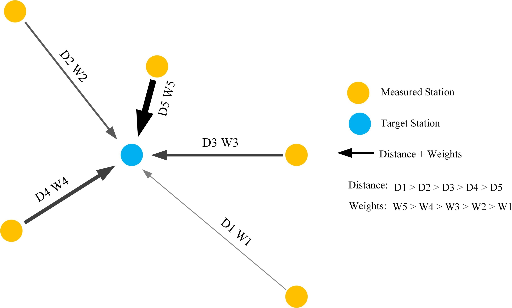

|
I am a first-year Ph.D. student at the University of Georgia, advised by Prof. Ninghao Liu. My research focus on graph self-supervised learning, explanation for graph representation learning. I am also fortunate to work with Kaixiong Zhou and Qiaoyu Tan. Before joining UGA, I obtained my Master degree in Renewable Energy and Clean Energy from North China Electric Power University, Beijing, supervised by Prof. Honglu Zhu. I received my Bachelor degree in New Energy Science and Engineering at North China Electric Power University, Beijing. Email / Linkedin / Google Scholar / Github |

|
News
| 2022/01 - I joined DLGA lab at University of Georgia as research assistant. |
Selected Publications
|  |
(ECML-PKDD), European Conference on Machine Learning and Principles and Practice of Knowledge Discovery in Databases, 2023. |
Teaching
| Teaching Assistant of CSCI4380/6380 Data Mining, University of Georgia, Spring 2023 |
| Teaching Assistant of CSCI4360/6360 Data Science, University of Georgia, Fall 2022 |